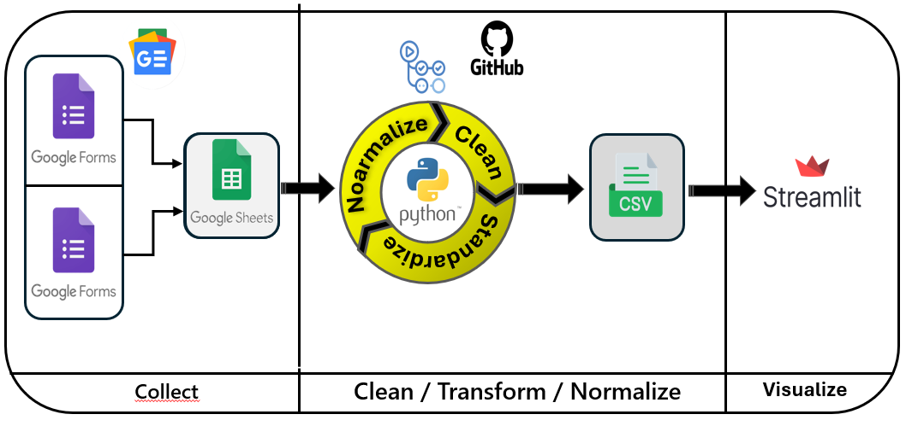
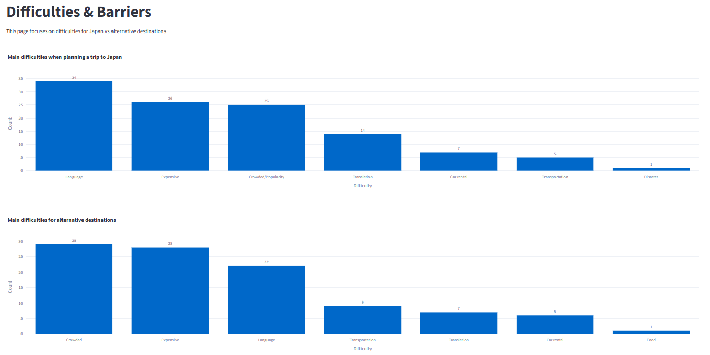
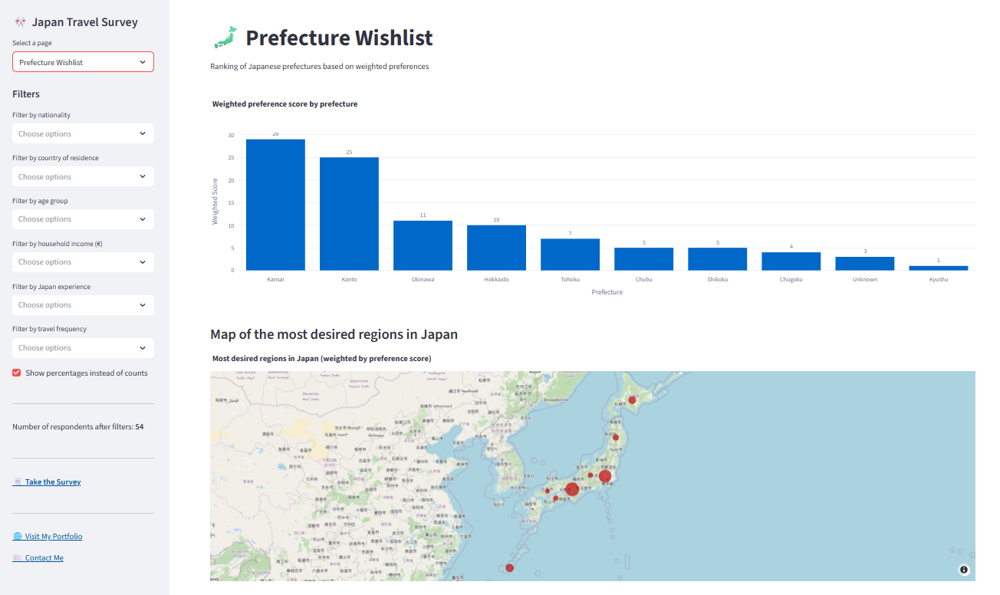

Analyse des motivations de voyage au Japon
Des entretiens aux insights
Comprendre pourquoi (et comment) les voyageurs souhaitent visiter le Japon — et transformer les réponses à une enquête en insights actionnables via un dashboard analytique en libre-service.
Résumé principal
Les acteurs du tourisme s’appuient souvent sur des entretiens réalisés sur site pour comprendre les intentions, les motivations et les freins des visiteurs. Si ces insights qualitatifs sont précieux, cette approche est rarement scalable et rend difficile la comparaison des segments ou le suivi des tendances dans le temps.
Japan Travel Insights est un produit d’analytics de bout en bout qui transforme un processus d’entretiens manuels en un pipeline d’enquête scalable : collecte de données bilingue, nettoyage et standardisation automatisés, et dashboard Streamlit conçu pour une exploration en libre-service.
Problématique business
Lors d’un séjour au Japon, j’ai collaboré avec 360, une entreprise accompagnant la préfecture de Yamagata dans la compréhension du tourisme international. L’approche initiale de l’équipe reposait sur des entretiens en face à face de 15 à 20 minutes réalisés dans des lieux touristiques.
Cette approche a mis en évidence trois limites structurelles : un effort opérationnel élevé, une portée limitée (restreinte aux personnes physiquement présentes), et une faible scalabilité (certains jours, peu voire aucun touriste étranger).
Le besoin du client était de disposer d’une solution permettant de collecter davantage de réponses dans le temps, de segmenter les audiences (âge, pays, motivations, freins) et de rendre les insights accessibles sans nécessiter de compétences techniques.
Aperçu de la solution
i conçu et mis en œuvre un workflow data complet qui remplace la collecte manuelle par un processus automatisé et scalable. Le système s’appuie sur Google Forms pour la collecte bilingue, Google Sheets comme source de vérité, Python pour le nettoyage et la standardisation des données, GitHub Actions pour l’orchestration, et Streamlit pour la restitution.
Workflow du pipeline (de bout en bout)
Le workflow ci-dessous illustre l’architecture réelle mise en œuvre dans le cadre du projet :
Google Forms (FR/EN) → Google Sheets → Python (Nettoyage / Transformation / Normalisation) → CSV sur GitHub → Dashboard Streamlit
Impact business
Ce projet apporte une valeur immédiate aux acteurs du tourisme en passant d’entretiens locaux et manuels à un produit data capable de se déployer en ligne et de rester à jour dans le temps.
portée élargie, effort réduit, segmentation cohérente et prise de décision plus rapide grâce à un dashboard en libre-service.
Concrètement, le client peut segmenter les audiences (qui est intéressé, pourquoi, quels sont les freins), identifier les destinations privilégiées et exporter des jeux de données filtrés pour des analyses complémentaires dans Excel ou des outils de BI.
Insights clés
Below are examples of the kind of insights the dashboard makes easy to surface. Replace the statements with your real results once you lock your latest dataset.
- Interest segmentation: interest in visiting Japan varies strongly by age group and travel frequency, which helps prioritize target profiles.
- Top motivations: motivations cluster around culture/food, landscapes, safety, and “once-in-a-lifetime” travel goals, depending on respondent profiles.
- Main barriers: cost and distance are common blockers, but language and lack of information often explain hesitation for specific segments.
- Destination preferences: a small set of prefectures concentrates intent, enabling focused campaign testing and messaging.
- Competitive alternatives: when Japan is not chosen, alternative destinations reveal clear “trade-offs” (budget, climate, proximity), useful for positioning.
Dashboard interactif
J’ai développé une application web Streamlit permettant à des utilisateurs non techniques d’explorer les insights via des filtres et des visualisations, sans manipuler les données brutes ni le code. Le jeu de données étant mis à jour deux fois par mois, l’application reste rapide et fiable grâce à une stratégie de cache alignée sur ce cycle de rafraîchissement.
Aperçu du dashboard interactif

Mon rôle & compétences clés démontrées
J’ai pris en charge le projet de bout en bout, compréhension du contexte métier, conception de l’enquête, ingénierie du pipeline, automatisation et mise à disposition du dashboard. L’objectif était de construire un système durable, utilisable et scalable, au-delà d’une analyse ponctuelle.
Les compétences clés démontrées incluent, une approche orientée modélisation des données (source de vérité unique), la qualité et la standardisation des données, l’automatisation, le product thinking (UX en libre-service) et la communication métier (transformer des réponses en décisions).
Technologies utilisées
Prochaine étape
Ce projet a été conçu comme une base solide. Voici des évolutions réalistes permettant d’en étendre la valeur sans modifier l’architecture centrale.
- Découverte de segments : mise en place de modèles de clustering pour identifier des profils de voyageurs à fort potentiel et adapter les messages.
- Reporting guidé : génération automatique de rapports PDF à partir des filtres sélectionnés et des visualisations clés.
- Analyse en langage naturel : intégration d’un chatbot léger permettant d’interroger le jeu de données en langage naturel (par exemple : « principaux freins pour les 18–25 ans en Europe »).
- Cadre de décision : transformation des insights en recommandations de campagnes mesurables (hypothèses → tests → apprentissages).
Synthèse
Japan Travel Insights illustre comment un processus de collecte de données local et manuel peut être transformé en un produit d’analytics scalable. En combinant une ingestion automatisée, des règles de standardisation robustes et un dashboard orienté métiers, le projet transforme des réponses à une enquête en insights directement exploitables pour la stratégie.
Parce que comprendre les voyageurs ne consiste pas seulement à collecter des réponses — mais à révéler ce qui guide réellement leur parcours.
Galerie
- 
- 
- 